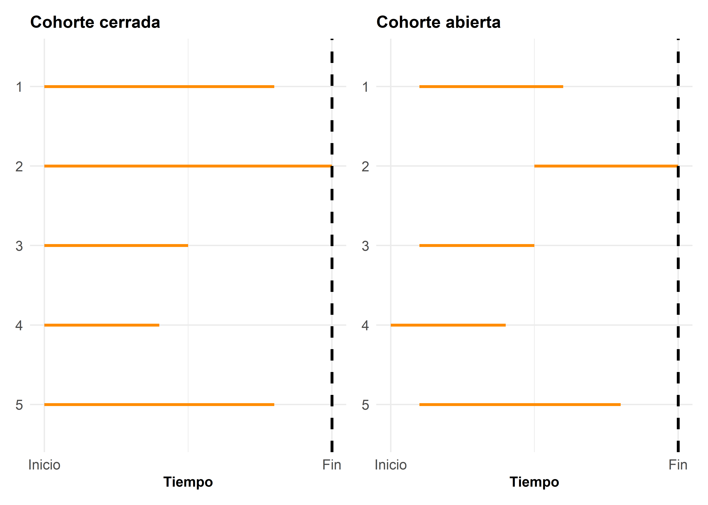
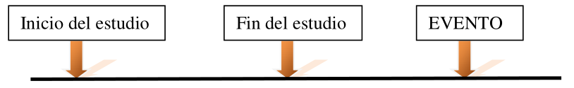
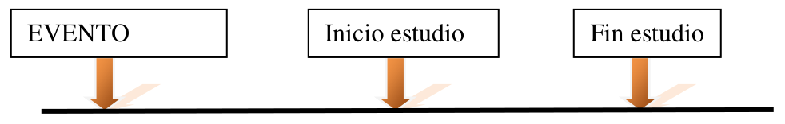
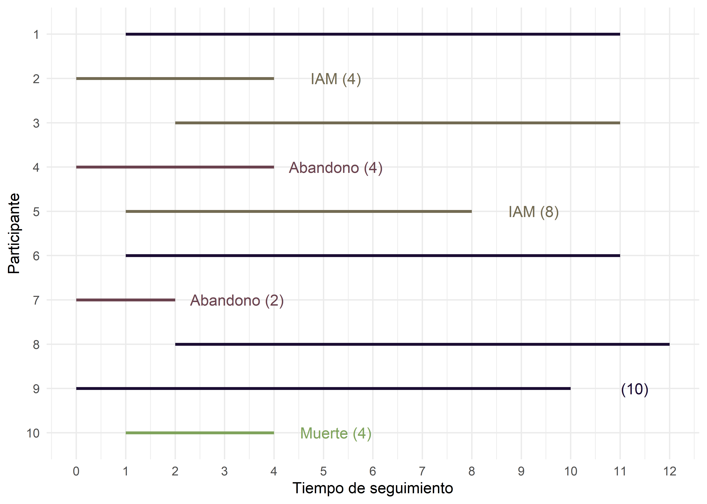
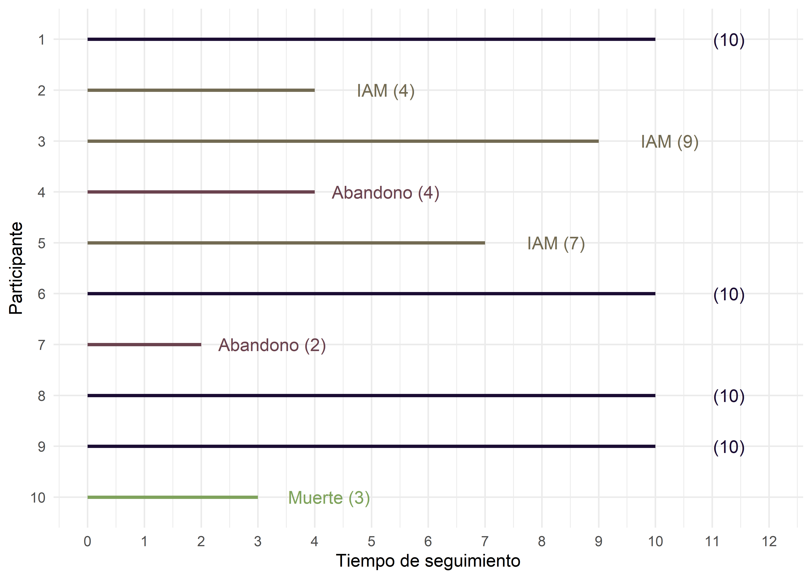

Análisis de supervivencia
Andrea Silva ![]()
Introducción
El estudio de procesos de supervivencia implica el seguimiento de individuos a lo largo del tiempo, pudiéndose presentar diversas situaciones que complican su caracterización. La característica más relevante de este tipo de datos —el tiempo hasta que ocurre un determinado suceso— es que, al finalizar el periodo de observación, probablemente no todos los pacientes habrán experimentado el evento de interés.
Además puede ocurrir que algunos pacientes se hayan perdido durante el seguimiento por causas diversas, imposibilitando conocer su estado final. También es habitual que los pacientes vayan incorporándose durante todo el periodo de observación. En estos casos, quienes ingresan más tarde serán observados durante un tiempo más corto, por lo que su probabilidad de experimentar el suceso será menor.
En enfermedades crónicas, tales como el cáncer, la supervivencia se mide como la probabilidad de permanecer con vida durante un determinado intervalo de tiempo. Indicadores como la supervivencia al año o a los cinco años son comúnmente utilizados para caracterizar la gravedad de una enfermedad y establecer pronósticos. Típicamente, el pronóstico del cáncer se valora determinando el porcentaje de pacientes que sobrevive al menos cinco años después del diagnóstico.
El análisis de supervivencia se utiliza cuando el tiempo es el objeto de interés, ya sea como “tiempo hasta la ocurrencia de un evento” o como “riesgo de ocurrencia por unidad de tiempo”. Este enfoque incorpora el componente dinámico del tiempo, por lo que la variable respuesta es una combinación de dos elementos: el evento (respuesta) y el tiempo hasta que ocurre.
El evento o desenlace de interés es de tipo dicotómico, e indica si el suceso ha ocurrido o no (por ejemplo: muerte, recidiva, aparición de una complicación, etc.). La variable numérica, por su parte, representa el tiempo transcurrido hasta la aparición del evento.
Los paradigmas de diseño de estudio que generan este tipo de información son principalmente los estudios de cohorte y los ensayos clínicos, ya que ambos implican el seguimiento de un grupo de individuos a lo largo del tiempo. Esto permite acceder directamente a la variable respuesta: el tiempo hasta la ocurrencia de un evento.
Recordemos que en ambos diseños, pueden presentarse dos tipos de cohortes: cerradas y abiertas. Según el tipo, será posible estimar distintas medidas de ocurrencia: incidencia acumulada o densidad de incidencia. También es importante tener presente que, en ambos tipos de cohortes, puede haber pérdida de información por distintas razones, lo que debe ser considerado en el análisis.
A la variable “tiempo hasta un evento”, en el contexto del análisis de supervivencia, se la llama habitualmente “tiempo de supervivencia”, aunque el evento de interés no sea la muerte. Algunos autores se refieren a los tiempos de supervivencia como “tiempos de fallo”. En general, en el lenguaje de supervivencia, el evento de interés, tiene una connotación negativa: muerte, recaída, rechazo a un trasplante, insuficiencia renal, etc.
Comenzaremos intentando comprender las diferencias que este tipo de análisis tiene con otras metodologías, en que se diferencian los datos del resto de los datos y por qué necesitamos mucho soporte estadístico para comprender esta metodología.
El lenguaje propio del análisis de supervivencia
Una de las características distintivas de los datos de supervivencia es que la variable de interés —el tiempo hasta que ocurre un evento— solo toma valores positivos y suele presentar distribuciones sesgadas.
Por ejemplo:
En un estudio sobre recaídas en pacientes de alto riesgo, la mayoría de los eventos pueden ocurrir temprano en el seguimiento.
En cambio, en un estudio poblacional sobre tiempo hasta la muerte, la mayoría de los eventos pueden ocurrir en etapas más tardías.
Esto nos hace pensar que los procedimientos estadísticos estándar que asumen normalidad de los datos no son apropiados para estos casos. Aunque podríamos recurrir a procedimientos no paramétricos, existe un desafío adicional: la información de seguimiento suele estar incompleta para algunos participantes.
Censura y truncamiento
En estudios con cohortes abiertas, los participantes que ingresan más tarde al estudio tienen un período de seguimiento más corto que quienes ingresan más temprano. Algunos participantes pueden abandonar el estudio antes de finalizar el seguimiento (por mudanza, pérdida de interés, etc.), o incluso fallecer, aunque el evento de interés no sea la muerte.
En cada uno de estos casos, tenemos información de seguimiento incompleta. Es posible que el tiempo hasta que se produce el evento del interés no se conozca porque el estudio termina o porque un participante se retira del estudio antes de experimentar el evento. Estos tiempos son llamados tiempos censurados.
La censura, se refiere a la pérdida de información e indica que no se ha observado el tiempo exacto en que ocurrió el evento de interés. Existen tres tipos:
-
Censura a la derecha: ocurre cuando el tiempo entre el inicio del estudio y el evento de interés, es mayor que el tiempo de observación.

-
Censura a la izquierda: ocurre cuando el individuo presenta el evento de interés antes de ingresar al estudio, por lo que se sabe que su tiempo de supervivencia no observado es menor que el tiempo de observación.

Un ejemplo de esta situación puede darse en el caso en que se tiene el interés de determinar el momento (edad) en que el niño aprende a desarrollar cierta habilidad o tarea. Puede darse que algunos niños incluidos en el estudio ya hayan adquirido dicha habilidad previamente al ingreso al estudio.
Censura intervalar: en algunos estudios, la observación de los sujetos no se realiza de manera continua y los períodos de observación pueden ser muy largos entre dos observaciones consecutivas. En esta situación, es común que ocurra el evento de interés entre dos puntos de observación y no se sepa cuando ocurrió exactamente.
El truncamiento ocurre cuando ciertos individuos no ingresan al estudio debido a que el evento ya ocurrió fuera del período de observación. Al igual que para la censura, existen truncamientos a la izquierda, a la derecha y por intervalos, siendo los dos primeros los más comunes.
Truncamiento a la izquierda: en un estudio sobre supervivencia en mayores de 60 años, no se incluyen personas que murieron antes de esa edad.
Truncamiento a la derecha: en un estudio sobre infección por VIH, solo se incluyen personas que se infectaron dentro de la ventana del estudio.
Esta “desinformación” puede traer problemas técnicos importantes. La mayoría de los métodos de análisis de supervivencia suponen que los individuos censurados tienen la misma probabilidad de experimentar el evento que aquellos que permanecieron en el estudio. Si esto es así, decimos que la censura es “no informativa” y es lo deseable.
Por ejemplo, si se pierde la información de un individuo por mudanza, no hay razón para pensar que eso está vinculado al evento de interés. Si en cambio, el individuo abandona el estudio por complicaciones médicas, es más probable que esté ligado a nuestro evento de interés. Este último caso, se trata de “censura informativa”, lo cual debe evitarse, porque afectará la validez de las estimaciones.
Ejemplo de cohorte abierta
Consideremos un pequeño estudio prospectivo donde se siguen diez participantes para evaluar el desarrollo de infarto agudo de miocardio (IAM) durante un período de 10 años. Los participantes son reclutados para el estudio durante un período de dos años y son seguidos durante un máximo de 10 años.
El siguiente gráfico resume el seguimiento de cada participante, indicando eventos (IAM), abandonos, muertes y finalización del estudio sin evento:

Observando el gráfico, podemos decir que, durante el seguimiento:
Tres pacientes sufrieron el evento de interés IAM (pacientes 2, 3 y 5)
Dos pacientes abandonaron el estudio por razones desconocidas (pacientes 4 y 7)
El paciente 10 falleció
Cuatro pacientes completaron los 10 años de seguimiento sin sufrir IAM (pacientes 1, 6, 8 y 9)
Basados en estos datos: ¿Cuál es la probabilidad de un paciente de sufrir IAM en 10 años?
Tres de diez participantes sufren IAM en el transcurso del seguimiento, es decir que la probabilidad sería 0,3 (30%). Pero este valor probablemente sea una subestimación del verdadero porcentaje ya que dos participantes abandonaron el estudio y podrían haber sufrido un infarto, que habría sido observado si hubiésemos podido seguirlos los 10 años completos. Sus tiempos observados fueron censurados. Además, un participante muere después de tres años de seguimiento.
¿Debemos incluir estos tres individuos en el análisis?
Si excluimos a los tres participantes censurados, la estimación de la probabilidad de que un individuo sufra un IAM sería 3/7 = 43%, un valor sensiblemente superior a la estimación inicial de 30%. Esta diferencia destaca una de las particularidades del análisis de supervivencia: no siempre es posible observar a todos los participantes durante todo el período de seguimiento, lo que hace que estos datos requieran un tratamiento estadístico especial. En nuestro ejemplo:
El participante 4 se observó durante 4 años y durante ese período no tuvo un IAM
El participante 7 se observó durante 2 años y durante ese periodo no tuvo un IAM
Mientras no hayan experimentado el evento de interés, los individuos en seguimiento aportan información importante. Las técnicas de análisis de supervivencia aprovechan esa información parcial para estimar con mayor precisión la probabilidad de ocurrencia del evento. Muy pronto veremos cómo, pero antes, puntualizaremos un supuesto importante que se hace para hacer un uso adecuado de los datos censurados.
Ejemplo de cohorte cerrada
Ahora consideremos un estudio con los mismos participantes, pero todos ingresan al mismo tiempo. Aunque los eventos y censuras son los mismos, el momento en que ocurren cambia: los IAM ocurren más temprano, y los abandonos/muertes más tarde:

¿Pueden estas diferencias en las experiencias de los participantes afectar a la estimación de la probabilidad de que un participante sufra un infarto de miocardio en un período de 10 años? En breve contestaremos también esta pregunta.
En el análisis de supervivencia se analiza no sólo el número de participantes que sufren el evento de interés (indicador dicotómico de estado del evento), sino también los momentos en que se producen los acontecimientos (tiempo de supervivencia).
Si todos los pacientes bajo estudio experimentaran el evento durante el período de observación, sería sencillo calcular la proporción de aquellos que, transcurrido un determinado tiempo desde su inclusión, aún no han presentado el evento: es decir, los “sobrevivientes”. Podríamos entonces representar gráficamente esta proporción en función del tiempo desde la entrada al estudio, y obtendríamos la función de supervivencia, denotada como \(S(t)\).
Sin embargo, las cosas se complican cuando no todos los pacientes presentan el evento. Por ejemplo, un paciente podría haber ingresado a mitad del período de seguimiento, ser observado durante dos años y, al finalizar el estudio, no haber sufrido el evento.
Como dijimos, en análisis de supervivencia nos interesa el tiempo hasta que ocurre un evento. Este tiempo se conoce como tiempo de supervivencia, incluso cuando el evento no sea la muerte. Se trata de una variable aleatoria continua, que no puede tomar valores negativos y que rara vez sigue una distribución normal. Ya hemos visto que toda variable aleatoria posee una distribución de probabilidad que describe su comportamiento. Así que, para estimar probabilidades de que el evento ocurra, necesitaremos conocer la distribución de estos tiempos de supervivencia.
Como probablemente habrán advertido, estamos utilizando el lenguaje de la probabilidad, así que si no recuerdan los conceptos de función de densidad y función de probabilidad acumulada para una variable aleatoria continua, es un buen momento para revisarlos.
Función de Supervivencia \(S(t)\)
Como mencionamos anteriormente, los tiempos de supervivencia se modelan mediante una función de densidad de probabilidad, denotada como \(f(t)\), que representa la probabilidad de que el evento ocurra exactamente en el tiempo \(t\). Sin embargo, como se trata de una variable continua, esta probabilidad puntual es técnicamente cero. Por eso, para obtener probabilidades debemos calcular el área bajo la curva de \(f(t)\) en un intervalo infinitesimal alrededor de \(t\).
A partir de \(f(t)\), podemos definir la función de distribución acumulada \(F(t)\), que expresa la probabilidad de que el evento ocurra en un tiempo menor o igual a \(t\). Se obtiene calculando la integral de la \(f(t)\).
\[ F(t)=P[T\leq t]= \int_0^t f(t)dt \]
Por ejemplo, si en un estudio estamos interesados en evaluar la supervivencia de pacientes pos trasplante hepático, necesitaríamos conocer la distribución de estos tiempos de supervivencia. El evento de interés sería “muerte pos trasplante” y si quisiéramos conocer la probabilidad de muerte a los dos, tres o cinco años, deberíamos realizar la integral señalada al tiempo deseado.
Si existe una \(F(t)\), que nos da la probabilidad de morir a determinado tiempo \(t\), entonces, existirá la función de supervivencia \(S(t)\), que mide la probabilidad de sobrevivir más de un tiempo \(t\).
\(S(t)=Pr(T>t)\)
\(F(t)=Pr(T\leq t)\)
\(S(t)=1-F(t)\)
Cumple con: \(S(0)=1\) (en el primer momento, todos los pacientes están vivos)
Para \(t \rightarrow \infty\); \(S(t) \rightarrow 0\) (en algún momento, lejano, todos moriremos!!!).
Si considero un período de tiempo, entre \(t_1\) y \(t_2\):
Si \(t_1 < t_2\) ; entonces \(S(t_1) > S(t_2)\)
Al considerar la posibilidad de adoptar una distribución teórica para los tiempos de supervivencia, estamos haciendo un abordaje paramétrico. Las funciones densidad de probabilidad más utilizadas son: la exponencial, Weibull y lognormal. No profundizaremos en detalles sobre estas aproximaciones, porque no son tan aplicadas en el ámbito del análisis de supervivencia aplicado a salud.
Nos centraremos en los abordajes no paramétricos, que parten de la construcción de las llamadas Tablas de supervivencia, y tienen como objetivo central la estimación de dos medidas: la probabilidad de morir en un momento dado y la probabilidad de sobrevivir hasta un determinado tiempo. Existen dos métodos: el método actuarial y el método de Kaplan Meier, que describiremos en el siguiente capítulo.
Referencias
Escuela Nacional de Sanidad (ENS). Instituto de Salud Carlos III. Ministerio de Ciencias e Innovación. Madrid. 2009. Manual docente de la Escuela Nacional de Sanidad: Método Epidemiológico.
Hernández-Ávila, Mauricio. 2011. Epidemiología: diseño y análisis de estudios. Buenos Aires: Editorial Médica Panamericana.
Royo-Bordonada, Miguel Angel, Javier Damian, Beatriz Perez-Gomez, Fernando Rodríguez-Artalejo, Fernando Villar Alvarez, Gonzalo Lopez-Abente, Iñaki Imaz-Iglesia, et al. 2009. Método epidemiológico. Instituto de Salud Carlos III (ISCIII). Escuela Nacional de Sanidad (ENS). http://hdl.handle.net/20.500.12105/5271.
Woodward, M. 2005. Epidemiology: Study Design and Data Analysis. Texts en statistical science. Chapman & Hall/CRC. https://books.google.com.ar/books?id=kcDHxgEACAAJ.